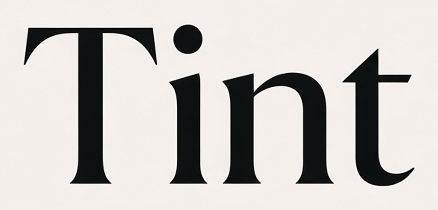

I kept scrolling the chat for things I need every day.
Same facts. Same questions. Scroll up. Ask Instinct again. Wait for the reply. The information was already there — it just lived in a thread that was never meant to be a dashboard.
Instinct is meant to be interfaceless. Talk, remember, move on. That works until what you need is something you glance at daily — and typing “send that again” starts to feel like friction you invented for yourself.
So I built an interface Instinct did not intend: a Home Screen surface where Instinct can leave short glances, and I only look. Interaction stays with Instinct. The widget only reads.
Tint is that surface — the day’s shape of what matters, without turning chat into a place you keep searching.
- Instinct publishes — curates what shows up, and in a sense uses the system.
- Adil views — connects the agent once, then glances.
Built because chat was the wrong place to keep looking for the same day.